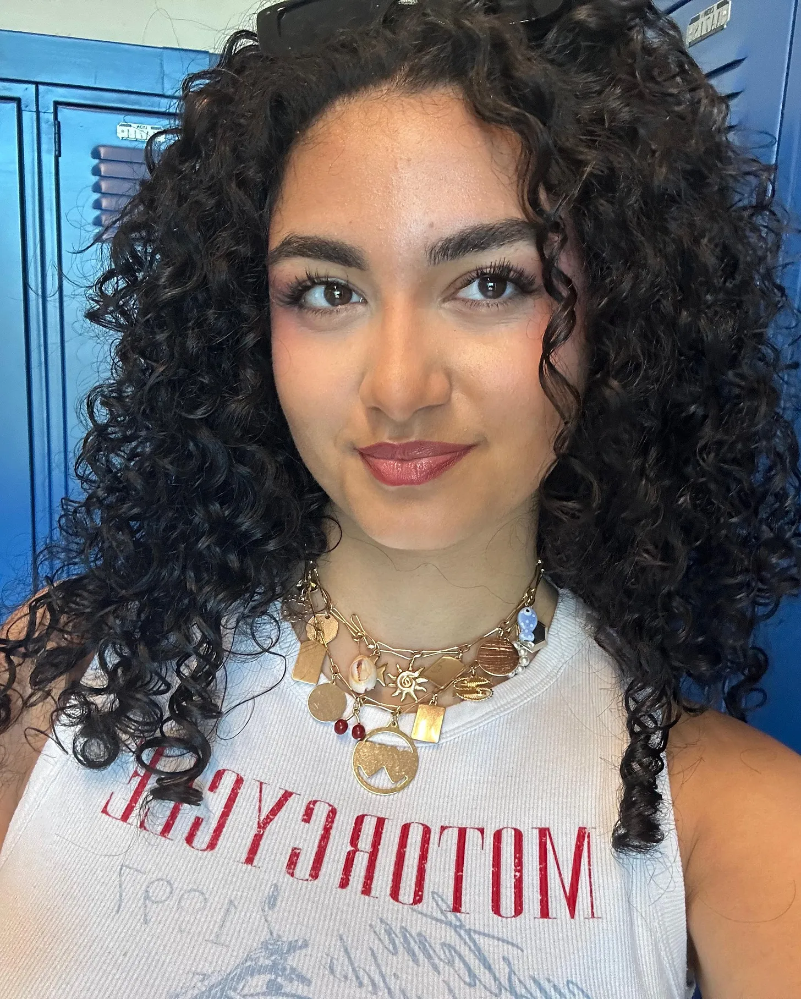
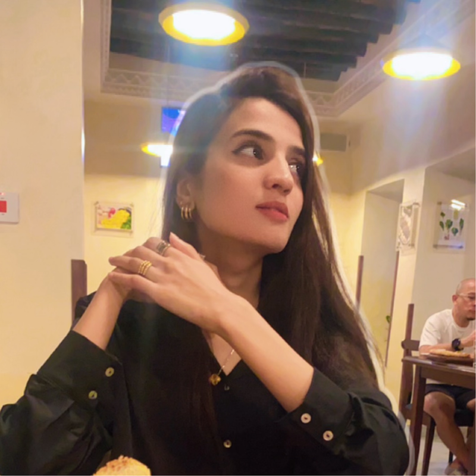
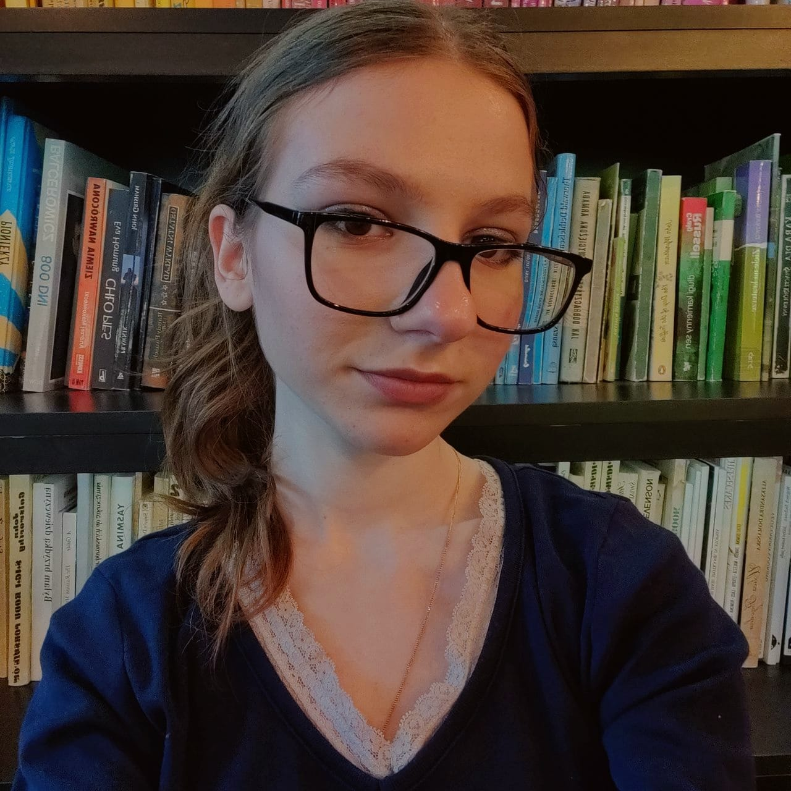
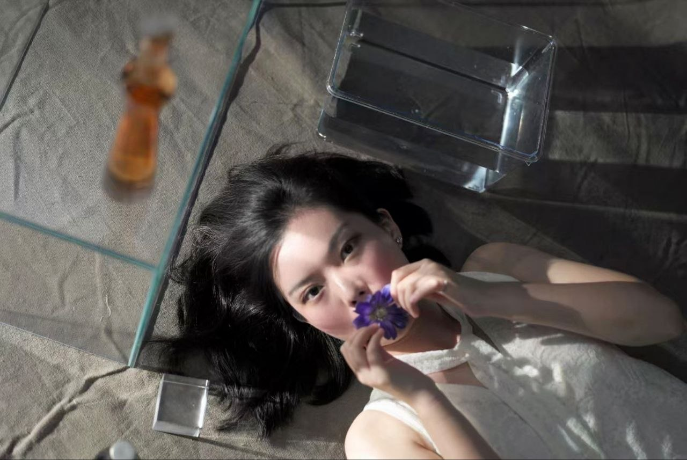

FOUNDER · CEO
Mei Tong Kim
Chief Executive Officer
📍 Asia
Youth-led, practitioner-guided, and built on the belief that good policy work requires patience, evidence, and People who genuinely care about the outcome.
YSP is structured as a living ecosystem — leadership rooted in strategy (Forest), operating teams that connect the work (Canopy), and active members producing on-the-ground research (Seed).
YSP's executive team founded the organisation in March 2026 and leads its programmes, growth, operations, and policy vision across Southeast Asia and beyond.



YSP's senior advisor brings decades of professional depth to mentor our Community track and support the C-Suite on strategic decisions.

A multifaceted professional with expertise spanning school counselling, psychology, education leadership, and DBT therapy. Fiza brings a unique blend of psychological insight and institutional experience to support our youngest and most vulnerable members.
She is also a Licensed Hypnotherapist, NLP Coach, and IT Lead — a rare combination that lets her see policy problems through the lens of both systems and human behaviour.
YSP's Directors lead the Communications and Technology functions, shaping how we tell our story and build the infrastructure that powers our programmes.
Managers are the connective tissue between leadership and members — running research, policy, and communications functions day-to-day.


Team members are active contributors producing research, policy analysis, and on-the-ground work across the network — the layer where YSP's published work actually originates.
Verdi is the heart of Youth for Sustainable Policy. She's curious, thoughtful, and quietly determined — representing the kind of youth leadership we believe in: grounded in evidence, driven by empathy, and hopeful about the future.
Named after "Verde," meaning green, Verdi reminds us that sustainability is about People, communities, and the long-term care of our planet. You'll see her across YSP spaces, guiding discussions and celebrating milestones.
Whenever things feel complex, Verdi is our reminder to slow down, think critically, and keep going — one well-researched step at a time 🌍💚
YSP is a lean, mission-driven team. If you want to help build policy infrastructure for the next generation — as a member, fellow, mentor, or staff — we'd love to hear from you.